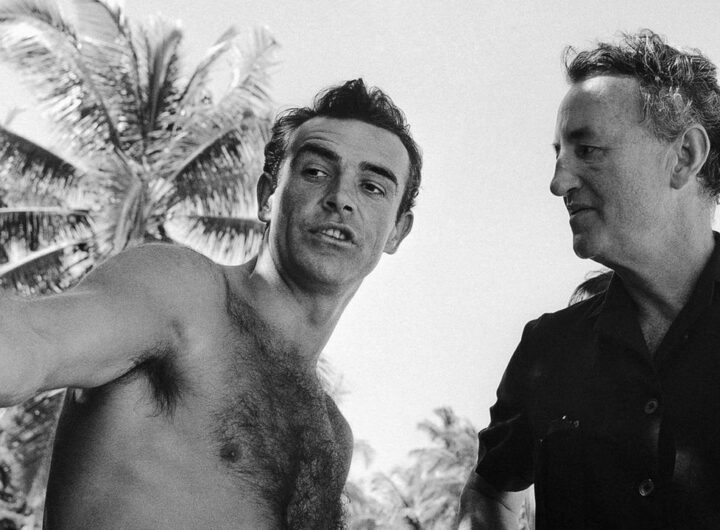
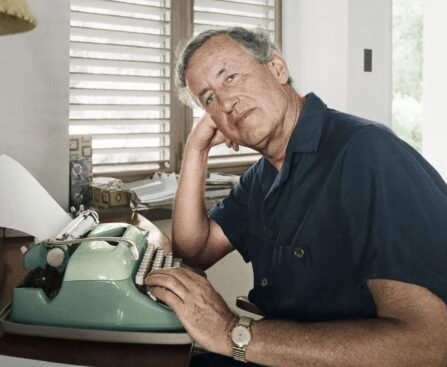
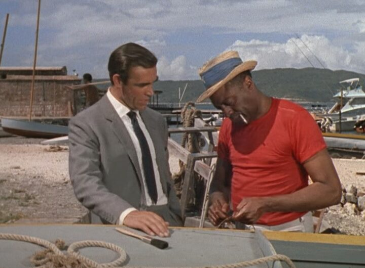
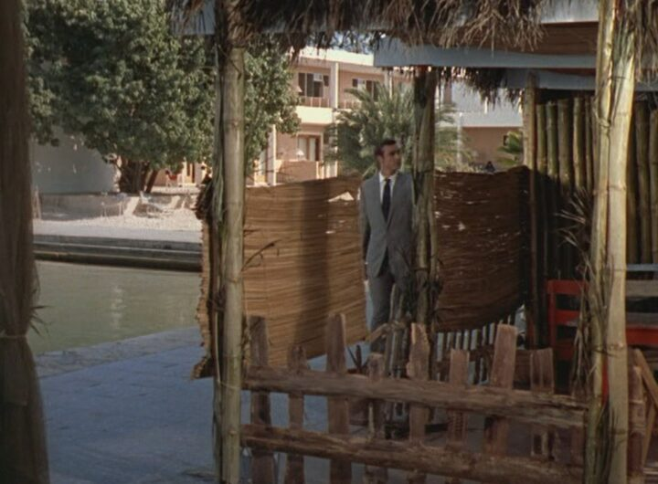
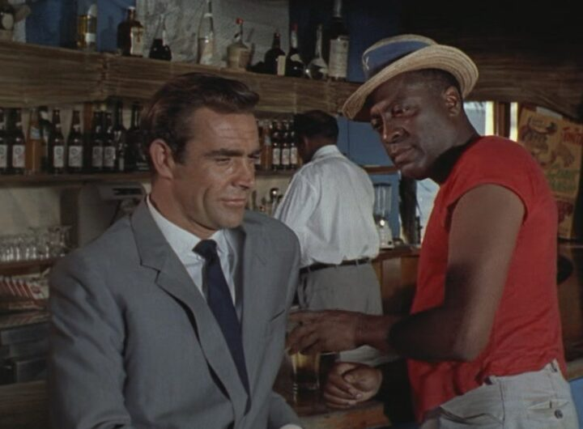

Grand Hotel Excelsior Port Royal holds a distinguished place in cinematic lore as the backdrop for several pivotal scenes in the inaugural James Bond film, “Dr. No”, and Ian Fleming’s penultimate book, “The Man with the Golden Gun”. At the time of the book and the film, the hotel was called the Morgan’s Harbour Hotel.
Released in 1965, The Man with the Golden Gun sees James Bond trailing Fransisco ‘Pistols’ Scaramanga around the Caribbean. Sitting in the Palisadoes Airport, now named the Norman Manley International Airport, Bond is awaiting a connecting flight to Cuba but receives information that Scaramanga is in Jamaica. Cancelling his flight, he books himself into the Morgan’s Harbour Hotel and arranges to meet his ‘darling secretary, Mary Goodnight’ for a dinner of two broiled lobsters and foie gras in the waterfront restaurant.


Released in 1962, Dr. No marked the beginning of the legendary James Bond franchise, introducing cinema-going audiences to the charismatic and suave British secret agent portrayed by the incomparable Sean Connery. Set against the breathtaking vistas of Port Royal, Jamaica, the film seamlessly weaves together elements of espionage, adventure, and romance, captivating audiences with its thrilling plot and exotic locales.
One of the most memorable scenes filmed at Grand Hotel Excelsior Port Royal water front is when James Bond is following a lead and introduces himself to Quarrel, the Cayman Islander fisherman. Sensing the conversation needs to be held away from watching eyes, he follows the retreating Quarrel into a bar for a drink with Quarrel, a fight with Pussfella, and an introduction to the CIA’s Felix Leiter. This iconic moment not only showcases the elegance and sophistication of the character of Bond but also sets the tone for the high-stakes espionage that unfolds throughout the film.


During the filming of this and other Dr. No scenes in the south of Jamaica, Sean Connery stayed in Room 118. The scene of James Bond’s near-death experience with the tarantula was filmed in Room 105. The walkway and bar into which Bond follows Quarrel has been renovated by the Grand Hotel Excelsior Port Royal and is now called the James Bond Café.
With its stunning natural beauty and exotic allure, Grand Hotel Excelsior Port Royal provides
the perfect backdrop for these memorable moments,
further immersing readers and viewers alike in the
captivating world of James Bond.
Written by Simon Firth
Author:
Jamaica – On the Tracks of James
Bond
Instagram – #simonjamesfirth
___________________